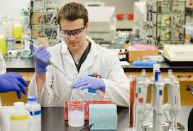

The department of Medical Laboratory Science (MLS) is involved in providing educabon for undergraduates and planning is extend the service towards postgraduate studies in near future with the intention of providing sound scientific foundation for medical laboratory scientific officers technologists enabling them to develop competencies necessary for the provision of modern laboratory science for the public.
